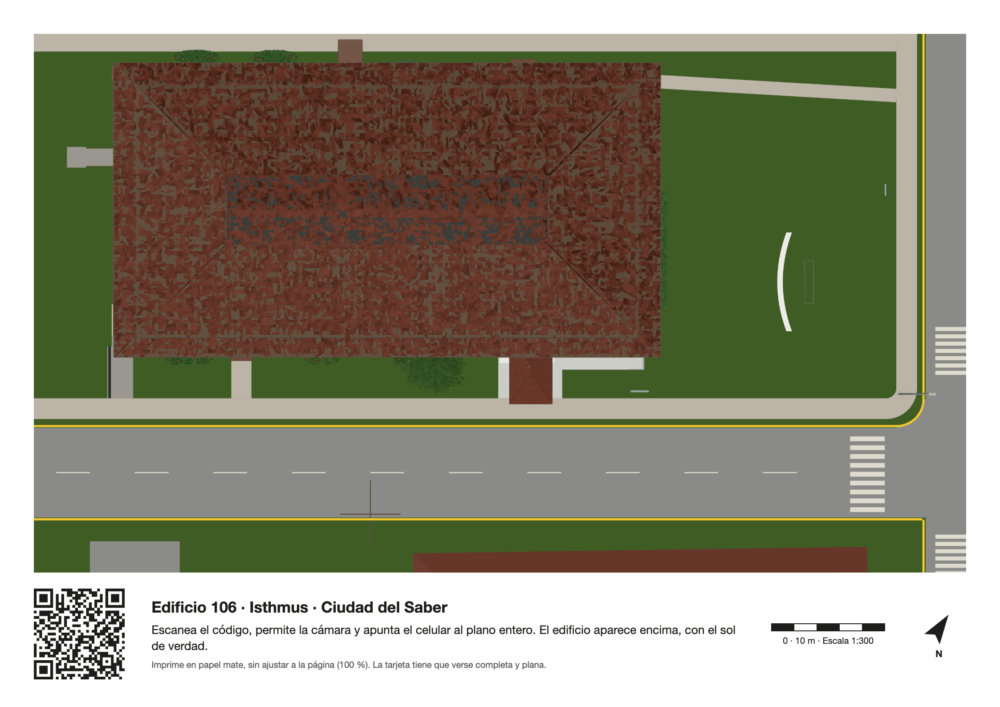

Edificio 106Isthmus · Ciudad del Saber
Volver al visor

Realidad aumentada
Edificio 106 sobre la mesa
Abre este enlace en Safari o Chrome
Dentro de esta aplicación la cámara suele no funcionar. Toca el menú de la aplicación y elige abrir en el navegador, o copia el enlace y pégalo en Safari o Chrome.
Enlace copiado. Pégalo en Safari o Chrome.
- Pon la tarjeta impresa sobre una mesa con buena luz.
- Gira la tarjeta hasta que la flecha N apunte al norte (sirve la brújula del celular). Así, a la hora de ahora, la sombra del modelo cae hacia el mismo lado que la sombra real.
- Toca «Abrir la cámara». El celular te pide permiso: acéptalo y apunta al plano entero.
¿No tienes la tarjeta? Descárgala (PDF) e imprímela en A4 o carta al 100 %, o ábrela en la pantalla del computador.
¿Tienes iPhone o iPad? También puedes ponerlo sobre la mesa sin tarjeta.
Apunta al plano entero de la tarjeta
Sol directo sobre cada pared (coseno de incidencia, cielo despejado)
Cuánto de frente le da el sol a cada pared a la hora elegida; el techo queda en gris. Es un cálculo geométrico: no cuenta nubes ni la luz del cielo. En el visor, la lente Sol usa la radiación de ERA5.